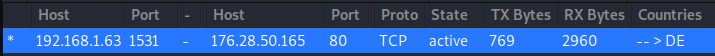
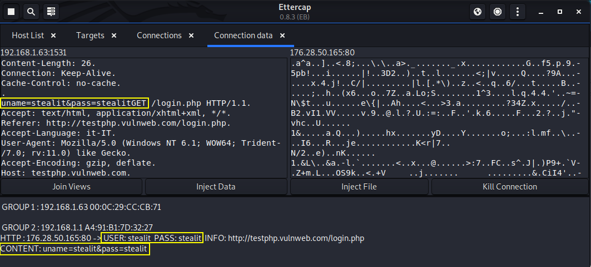

sniff credentials on an HTTP connection
To test it we can go on this site
http://testphp.vulnweb.com/login.phpIn order to inspect the packet sent via HTTP with Ettercap we can go in the Connection tab and double click on the correct connection of the list.
Ettercap automatically will try to intercept credentials sent via the network.
Otherwise we can always intercept the packet with Wireshark once that we have poisoned the ARP table with Ettercap:)
